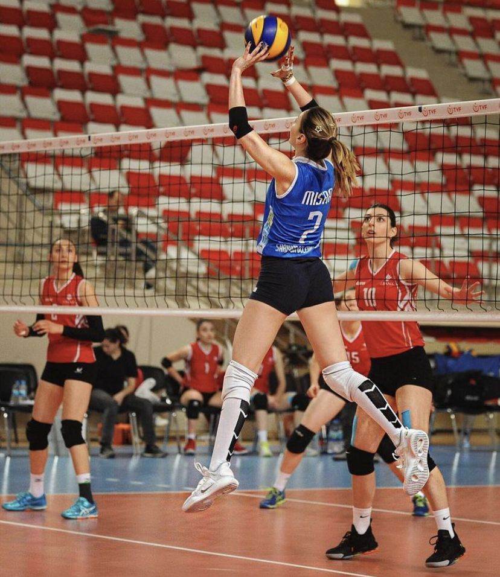
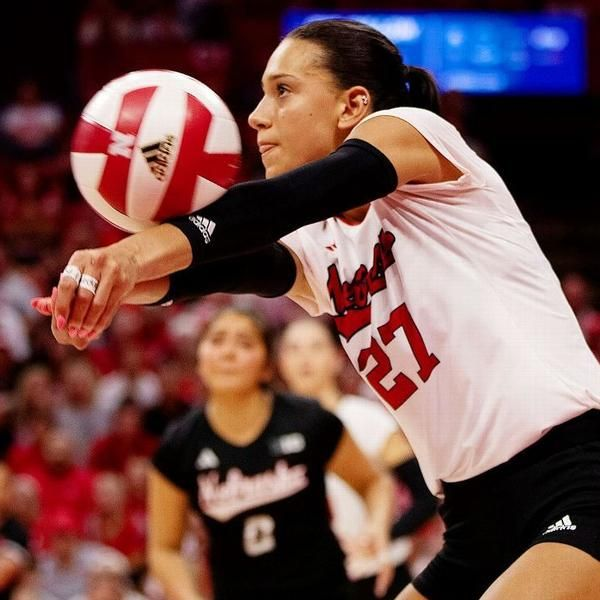
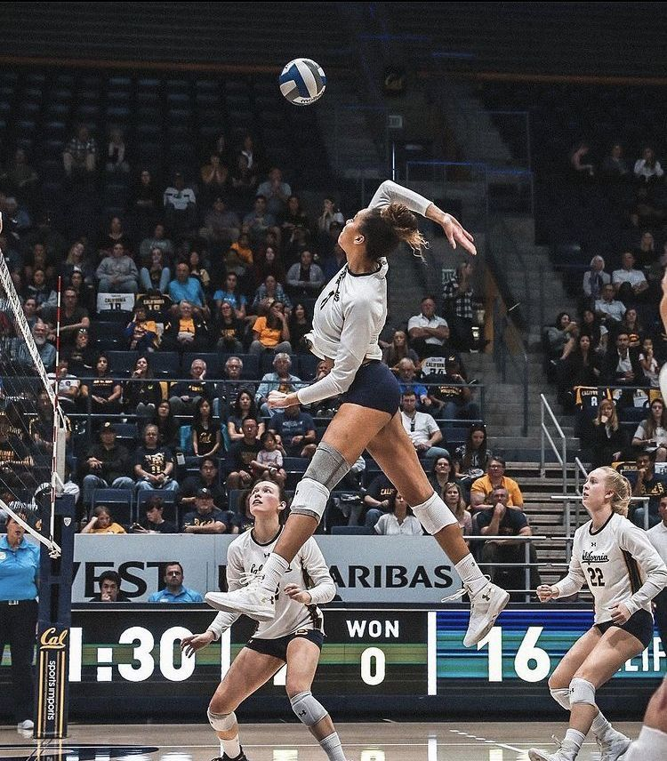
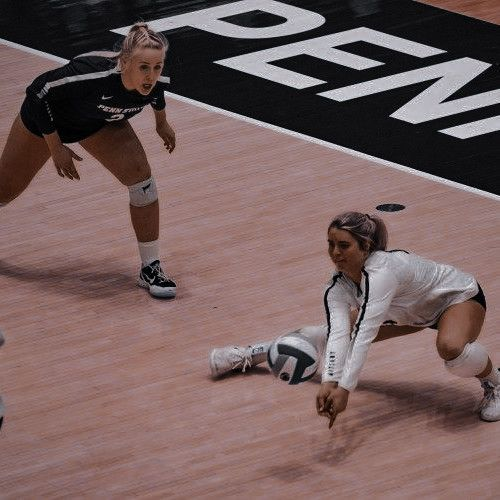
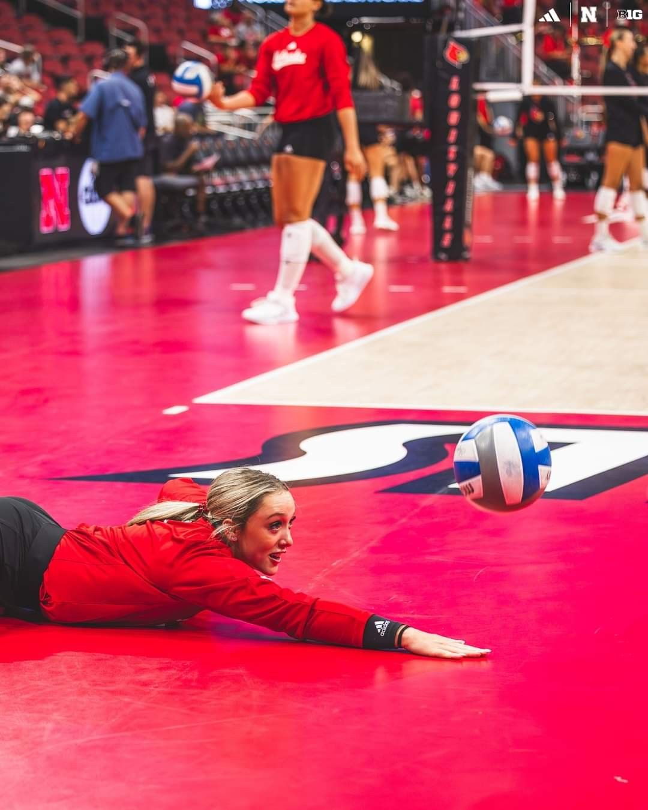
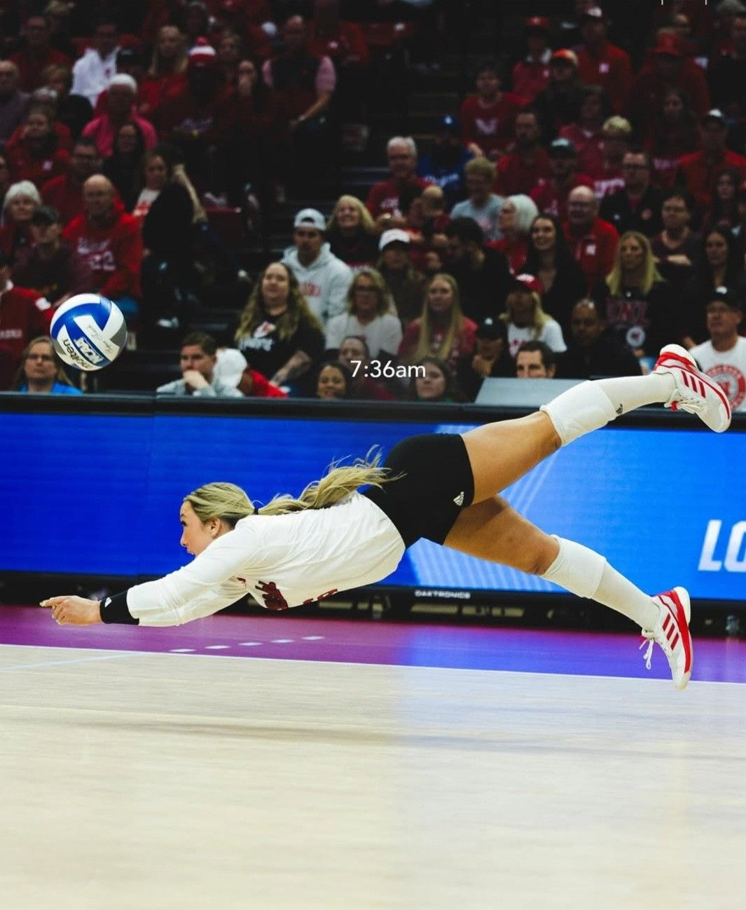
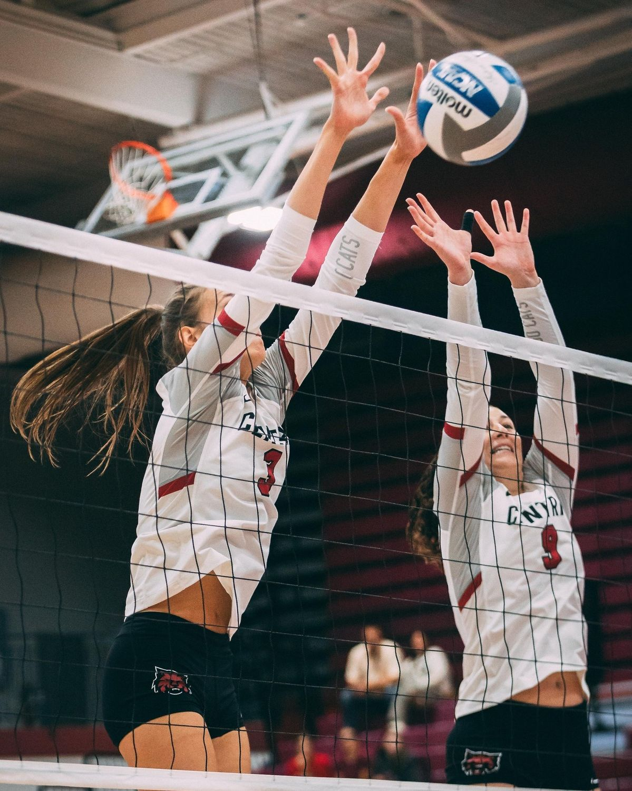
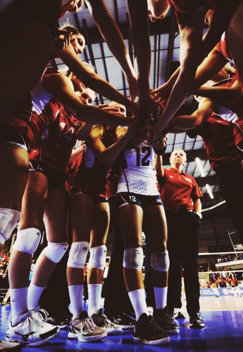

The image above illustrates how the crucial step of serving looks in volleball. It starts off the game and the team may score if the ball lands on the other teams court without touches but continues when the team passes it back.
The image above illustrates one of the hardest and most important parts of volleyball which is volleyball. The setter sets to hitter which attempts to spike on the other teams court.
The image above illustrates bumping where the player will pass to setter and receives a serve
The image above illustrates spiking which is when the player will agressively swing their arm after setter passes to hit the ball to the other courts side as deep as possible
The image above illustrates digging which is when a player has to bump a ball that is attacked lower to the ground causing more drive to get it back up
The image above illustrates pancakes which are when you lay your hand flat urgently to save a ball from hitting the ground
The image above illustrates a dolphin dive which is when you roll in a hill downward motion to bump a ball. One leg first elbows and base straight and let your body flow done without hitting your bones
The image above illustrates blocking which is when a couple players jump and face their palms towards a spiked ball to position it to the opposing teams floor or help their libero save the ball easily
The image above illustrates the teamwork and compassion that is apart of volleyball that provides the positive and encouraging enviorment